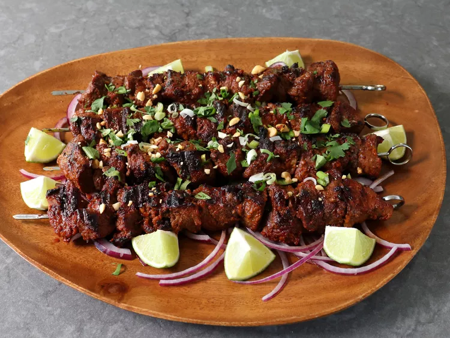

This is my take on Suya, grilled beef skewers from West Africa. Sirloin
steak is marinated in a quick and easy marinade that is extremely delicious
and perfect for cooking on the grill.

West African Grilled Beef
Ingredients
¼ cup creamy natural peanut butter
½ small yellow onion, grated
2 tablespoons tomato paste
1 tablespoon olive oil
1 tablespoon kosher salt (or 1 1/2 teaspoons fine table salt)
2 teaspoons smoked paprika
1 teaspoon allspice
¾ teaspoon garlic powder
½ teaspoon cayenne pepper
½ teaspoon freshly ground black pepper
¼ teaspoon powdered ginger
2 pounds top sirloin steak cut into 1.5-inch cubes
Steps of making a Suya
Combine peanut butter, grated onion, tomato paste, olive oil, salt,
paprika, allspice, garlic powder, cayenne, black pepper, and powdered
ginger in a mixing bowl. Stir until well combined.
Add steak pieces to the marinade bowl and toss to coat thoroughly.
Cover and allow to marinate in the refrigerator for about 2 hours.
Preheat an outdoor grill with coal for high heat and lightly oil the grate.
Thread marinated steak pieces onto large metal skewers.
Grill over the hot white coals until desired doneness, 5 to 6 minutes per side.